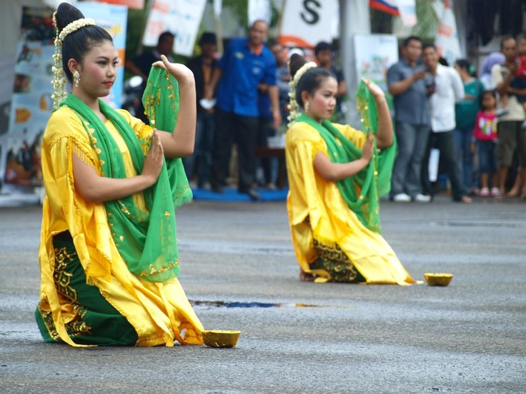
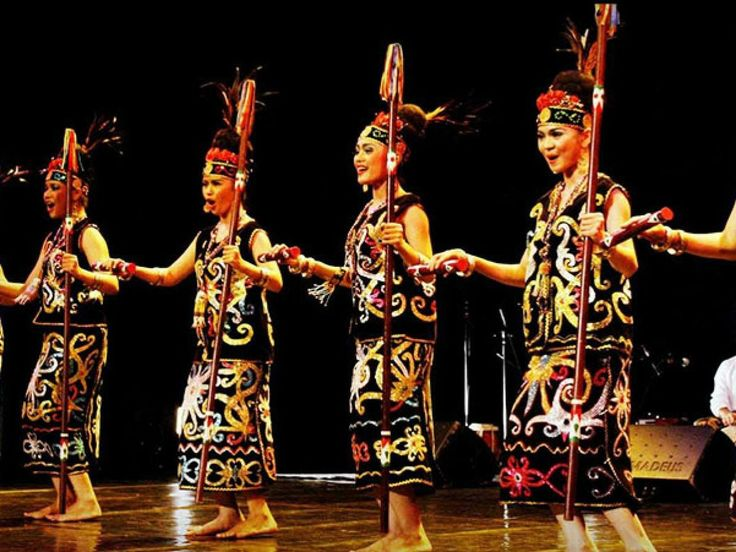
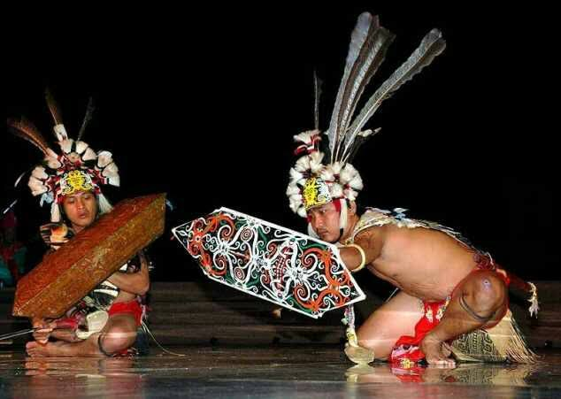

Jelajahi Pesona & Filosofi Tari Tradisional Kalimantan
Pusat informasi, galeri visual, dan direktori seni tari tradisional dari berbagai penjuru pulau Borneo untuk melestarikan warisan leluhur nusantara.
Jelajahi Katalog TariSekilas Budaya Tari Borneo
Seni gerak sakral dan profan yang sarat akan makna ritual, kebersamaan sosial, serta bentuk rasa syukur mendalam kepada sang pencipta alam.

Kalimantan Selatan
Tari Radap Rahayu
Tari klasik tradisional masyarakat Banjar yang ditarikan untuk menyambut tamu agung kenegaraan serta peresmian hajat penting.

Kalimantan Timur
Tari Gantar
Tari tradisional suku Dayak Benuaq dan Tunjung yang merepresentasikan siklus ritual adat bercocok tanam padi.

Kalimantan Barat
Tari Monong
Tari penyembuhan tradisional suku Dayak di Kalbar yang dipercaya mampu menangkal penyakit serta mengusir gangguan roh jahat.